2.4. Build from Source
Before you start: Normally, installing with the provided .whl package is sufficient. If the installation fails or you need custom features, you can build the Python Wrapper from source.
2.4.1. Environment
2.4.1.1. Compilation Platform Requirements
Windows: Visual Studio 2017 and above
Linux: gcc 5.4.0 and above
cmake: 3.15.0 and above
pybind11 2.10.3 and above
2.4.1.2. Python Version
Python 3.8 and above
2.4.2. Linux Python SDK Compilation
This section provides a comprehensive guide to installing, compiling, and running the Orbbec SDK for Python, covering all necessary steps for setup.
Contents:
Install Dependencies (Ubuntu)
Custom Python Path (Optional)
Build the Project
Run the Examples
Generate Python Stubs
Making a Python Wheel
Clone the repository to get the latest version:
git clone https://github.com/orbbec/pyorbbecsdk.git
cd pyorbbecsdk
git checkout v2-main
2.4.2.1. Install Dependencies (Ubuntu)
Install the necessary Python development packages
sudo apt-get install python3-dev python3-venv python3-pip python3-opencv
2.4.2.2. Custom Python Path (Optional)
If you use Anaconda, update the Python path in pyorbbecsdk/CMakeLists.txt before the find_package(Python3 REQUIRED COMPONENTS Interpreter Development) line:
set(Python3_ROOT_DIR "/home/anaconda3/envs/py3.6.8") # Replace with your Python path
set(pybind11_DIR "${Python3_ROOT_DIR}/lib/python3.6/site-packages/pybind11/share/cmake/pybind11") # Replace with your Pybind11 path
2.4.2.3. Build the Project
Create a virtual environment and build the project:
cd pyorbbecsdk
python3 -m venv ./venv
source venv/bin/activate
pip3 install -r requirements.txt
mkdir build
cd build
cmake -Dpybind11_DIR=`pybind11-config --cmakedir` ..
make -j4
make install
2.4.2.4. Run the Examples
Set up the environment and run the examples:
cd pyorbbecsdk
export PYTHONPATH=$PYTHONPATH:$(pwd)/install/lib/
sudo bash ./scripts/env_setup/install_udev_rules.sh
sudo udevadm control --reload-rules && sudo udevadm trigger
python3 examples/depth.py
python3 examples/net_device.py # Requires ffmpeg installation for network devices
2.4.2.5. Generate Python Stubs
Generate stubs for better IntelliSense support in your IDE
source env.sh
pip3 install pybind11-stubgen
pybind11-stubgen pyorbbecsdk
2.4.2.6. Making a Python Wheel
To generate a wheel package for easy distribution
cd pyorbbecsdk
python3 -m venv ./venv
source venv/bin/activate
pip3 install -r requirements.txt
mkdir build
cd build
cmake -Dpybind11_DIR=`pybind11-config --cmakedir` ..
make -j4
make install
cd ..
pip3 install wheel
python3 setup.py bdist_wheel
pip3 install dist/*.whl
2.4.3. Windows Python SDK Compilation
2.4.3.1. Download the Python SDK Source Code
git clone https://github.com/orbbec/pyorbbecsdk.git
cd pyorbbecsdk
git checkout v2-main
2.4.3.2. Install Dependencies
pip3 install -r requirements.txt
Here, it is assumed that you have installed Python 3 correctly. If you have not installed Python 3, you can refer to the Python official website and choose your Python 3 version for installation.
2.4.3.3. Configure Visual Studio Project
Open Cmake, set the source code path, and set the “build” folder as the path for generating binary files, as shown in the following figure.
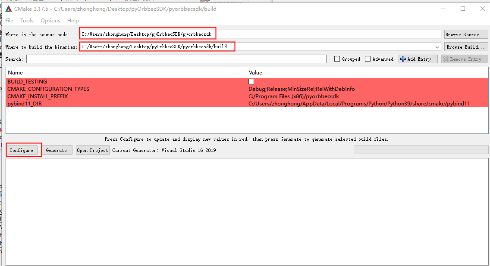
Click “Configure” and select the corresponding Visual Studio version and platform version. Then click “Finish”, as shown below:
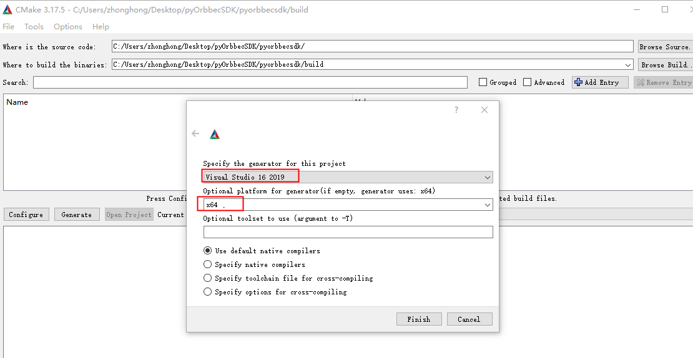
Here, it is assumed that you have installed Cmake correctly. If you have not installed Cmake, you can refer to the Cmake official website for installation.
Click “Generate”, as shown below:
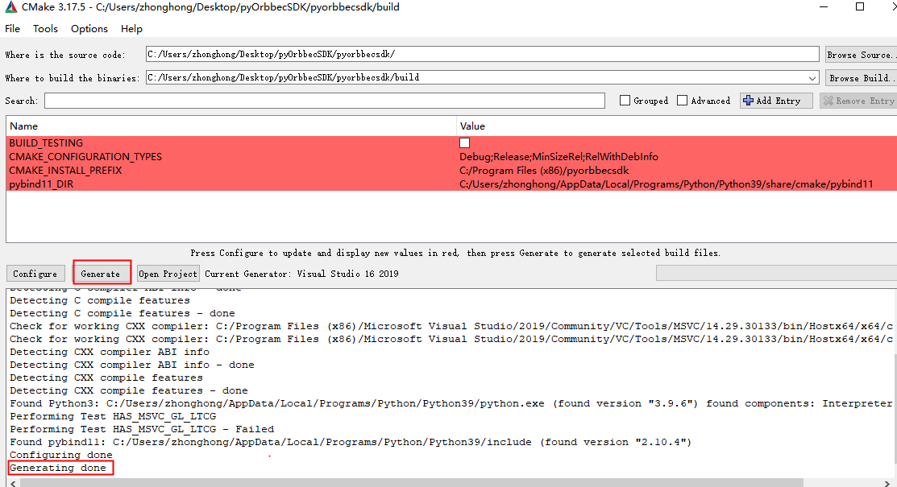
2.4.3.4. Compile the Python SDK
You can open the Python SDK project in two ways:
Method 1: Use Cmake, click the “Open Project” button, and open the Visual Studio project.
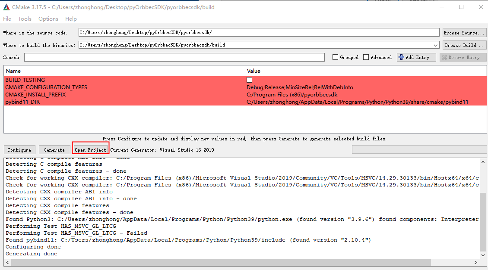
Method 2: Use the file explorer to directly start the Visual Studio project in the build directory, as shown in the following figure:
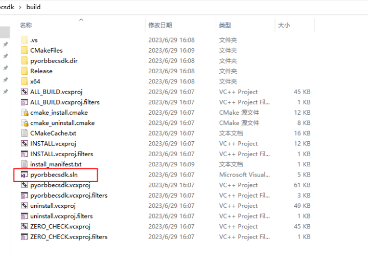
Open the Python SDK project, as shown below:
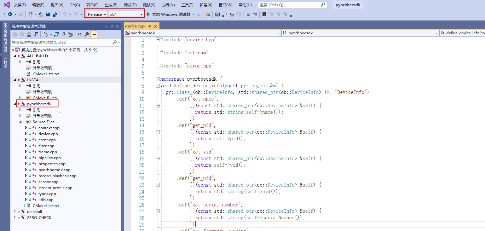
Open the Python SDK project, as shown below:
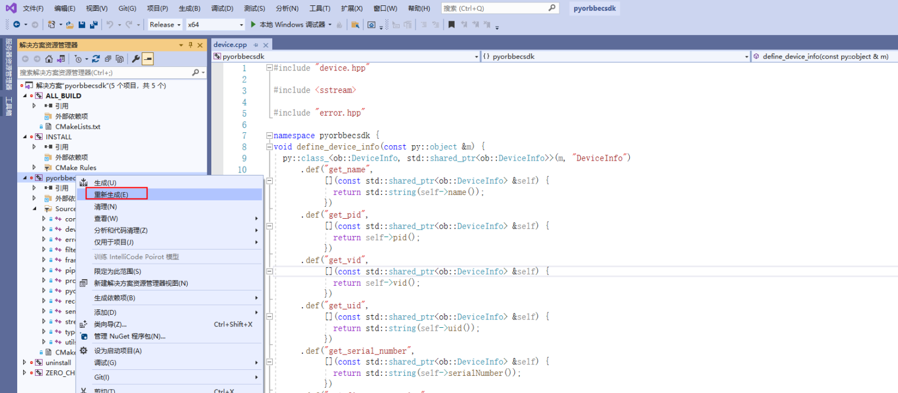
Right-click “INSTALL”, as shown below:
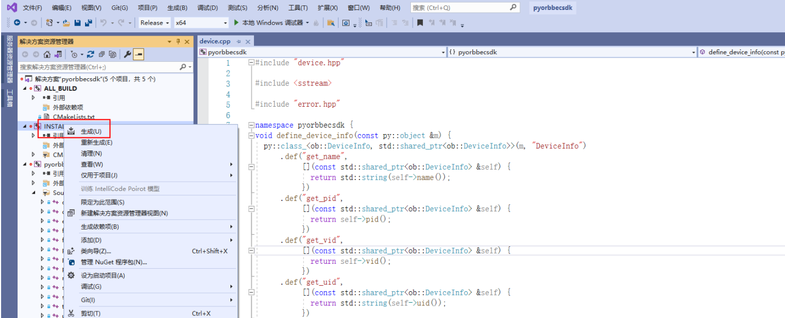
The compiled files will be copied to the install/lib directory, as shown below:
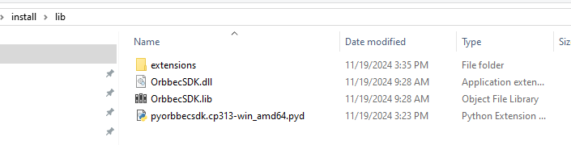
Copy the files in the install/lib directory to the examples directory, as shown below:
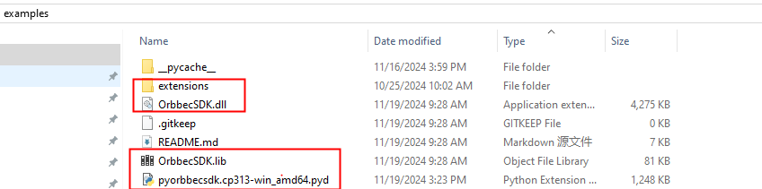
2.4.3.5. Test Examples
In the examples directory, execute test examples such as python color.py, as shown below:
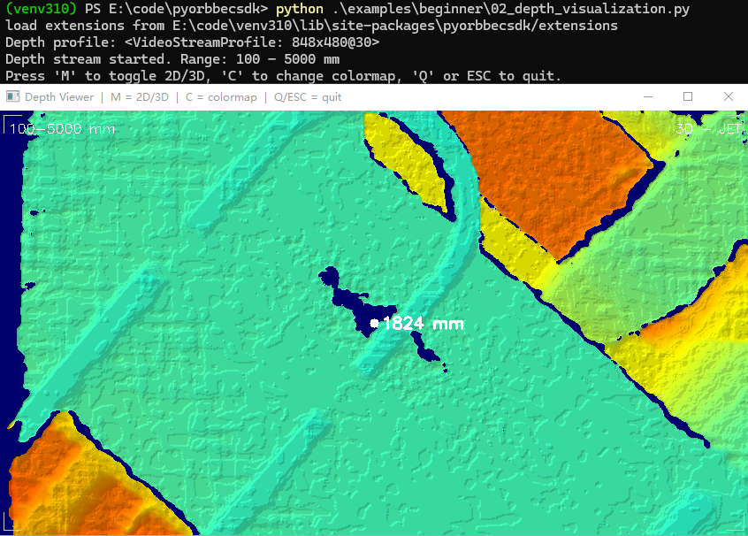